Inoffiziell · Open Source · im Test
Dein HolyArrs-Server, auf jedem Bildschirm.
Acolyte ist eine unabhängige App für iPhone, Android, Apple TV und Android TV. Sie spricht direkt mit dem HolyArrs-Server, den du selbst betreibst: stöbern, suchen, Titel anfragen, Downloads verfolgen und den Server pflegen. Keine Cloud dazwischen, kein Konto bei uns.
Acolyte ist im Test und noch nicht im App Store oder in Google Play. Du brauchst deinen eigenen HolyArrs-Server; Acolyte ist nur die App und bringt keinen mit.
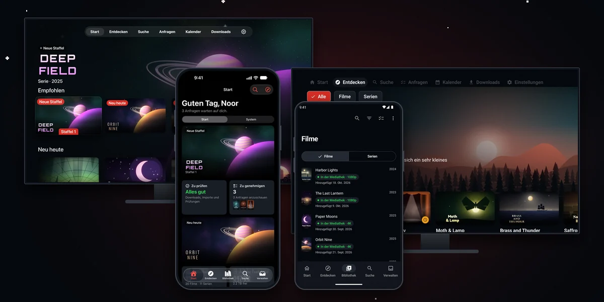
- 4 PlattformeniPhone, Android, Apple TV, Android TV
- 2 SprachenDeutsch und Englisch
- MIT-LizenzFrei und Open Source
- Kein TrackingKeine Analyse, keine Werbung
Screenshots
Schau es dir an, bevor du es installierst.
Dunkelmodus auf allen vier Plattformen, mit erfundenen Demo-Titeln. Die Apps folgen deinem System, die Handy-Apps haben also auch eine helle Seite.
iPhone
Ab iOS 18. Die ganze App, auch die Verwaltungswerkzeuge.
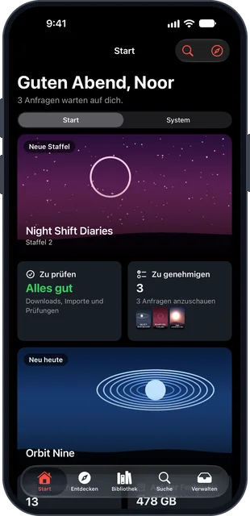
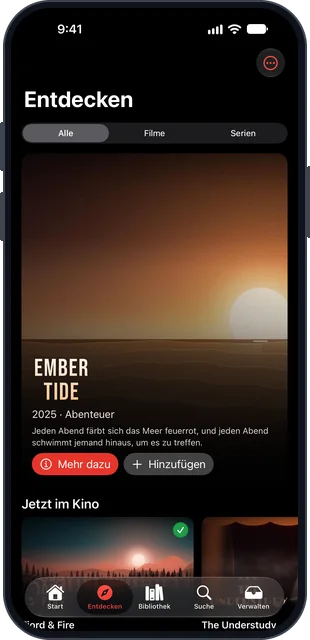
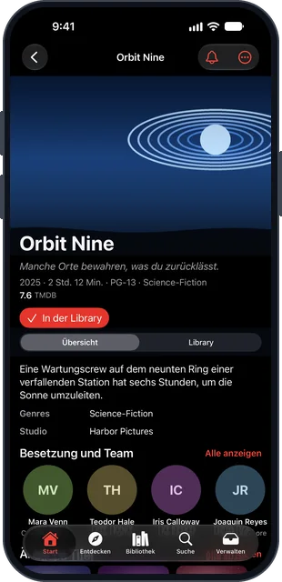
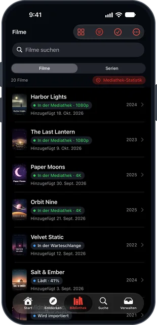
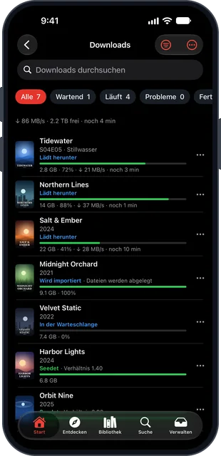
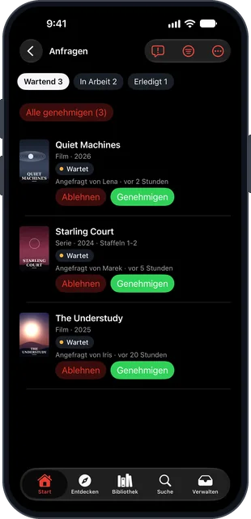
Android
Ab Android 8.0. Die ganze App, auch die Verwaltungswerkzeuge.
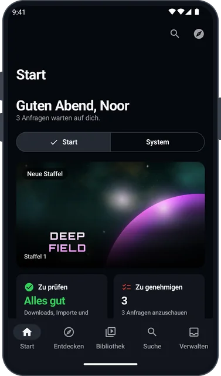
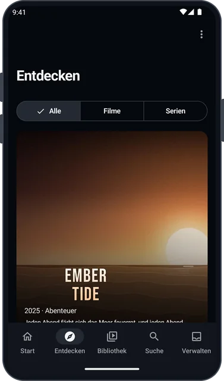
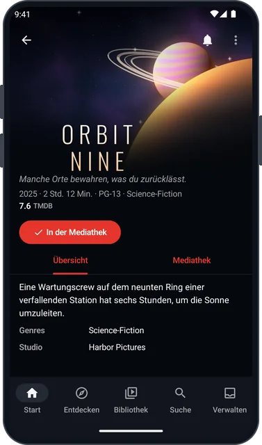
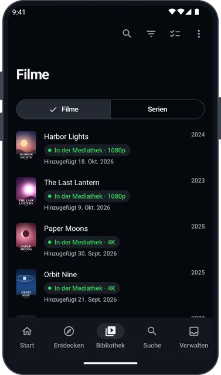
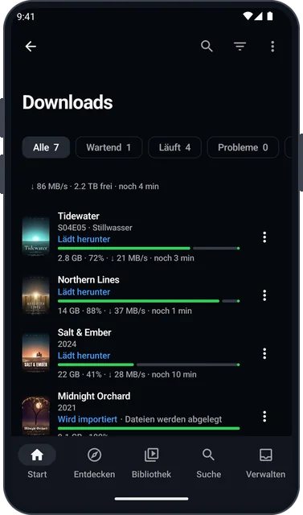
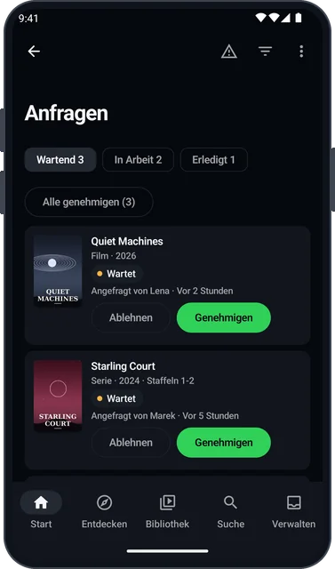
Apple TV
Ab tvOS 18. Gemacht für Fernbedienung und Sofa; die Serververwaltung bleibt auf dem Handy.
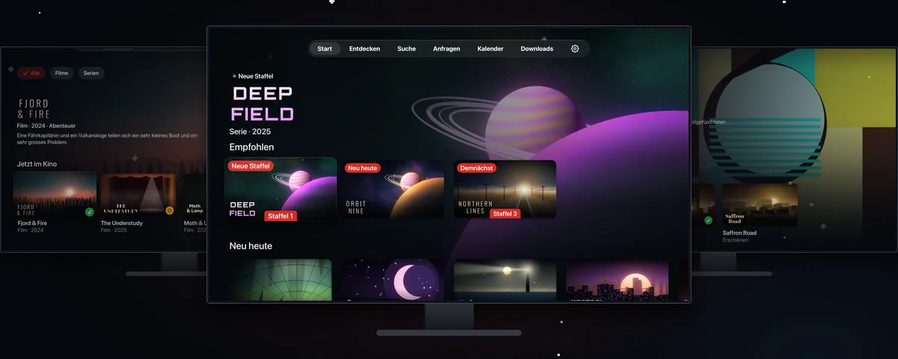
Android TV
Android TV und Google TV. Dieselben Bildschirme wie auf Apple TV, bedient mit dem Steuerkreuz.
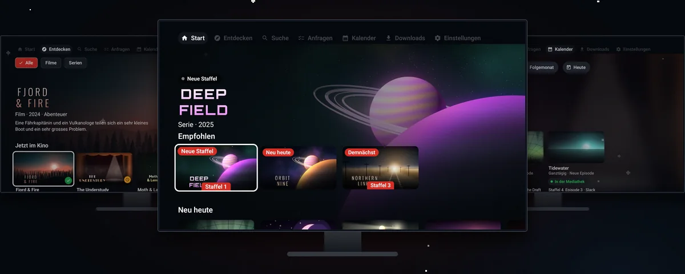
Was sie kann
Die HolyArrs-Weboberfläche, gemacht für Hand und Sofa.
Acolyte folgt dem Aufbau von HolyArrs. Was du siehst, hängt von deinem Konto ab und davon, welche Teile dein Server eingeschaltet hat: Verwaltende sehen alles, alle anderen stöbern und stellen Anfragen.
-
Start und Entdecken
Mach dort weiter, wo du aufgehört hast, sieh Neues und Beliebtes und stöbere nach Genre, Besetzung oder Reihe.
-
Suche
Durchsuche deine Bibliothek und darüber hinaus, oder zeige nur, was du schon hast.
-
Bibliothek
Filme, Serien und Musik mit Filtern, die du speichern kannst. Titelseiten zeigen Staffeln, Folgen, Besetzung und Trailer.
-
Anfragen
Wünsch dir einen Film oder eine Serie mit wenigen Tipps und verfolge den Stand. Wer genehmigen darf, beantwortet Anfragen auch hier.
-
Downloads und Kalender
Behalte die Warteschlange im Blick, füge Links und Dateien hinzu und sieh im Kalender, was ansteht.
-
Musik
Künstler, Alben und Neuerscheinungen gleich neben deinen Filmen und Serien.
-
Live-Aktualisierung
Die Ansichten aktualisieren sich von selbst, solange du sie ansiehst. Grundlage ist der Live-Kanal deines Servers.
-
Server verwalten
Für Verwaltende: Benutzer und Rollen, Status und Gesundheitsprüfungen und über 25 Einstellungsseiten, von Bibliotheksordnern und Downloadern bis zu Benachrichtigungen, Backups und Protokollen.
Android und iPhone -
Sorgfältige Anmeldung
HolyArrs-Passwort mit Zwei-Faktor-Code, Jellyfin, Emby, Plex (nicht auf den TV-Apps) oder API-Schlüssel. Geheimnisse liegen im Android Keystore oder in der Apple-Keychain.
Plattformen
Eine App, vier Orte zum Benutzen.
Die gesamte Logik teilen sich die Plattformen, eine Funktion verhält sich also überall gleich. Jede App ist nativ für ihr System geschrieben und folgt dessen Hell- oder Dunkelmodus.
-
Android
Ab Android 8.0, gebaut mit Jetpack Compose und Material 3.
Testversionen auf GitHub -
iPhone
Ab iOS 18, gebaut mit SwiftUI.
TestFlight-Beta, offen nach der Prüfung -
Apple TV
Ab tvOS 18. Start, Entdecken, Suche, Kalender, Downloads, Anfragen und Einstellungen, dazu Titelseiten und Trailer. Die Serververwaltung bleibt auf dem Handy.
Vorbereitet, noch nicht auf TestFlight -
Android TV
Android TV und Google TV (ab Android 8.0). Dieselben Bildschirme wie auf Apple TV mit Compose for TV, ohne Serververwaltung.
APK auf GitHub
Dein Server, deine Daten
Direkt von deinem Gerät zu deinem Server.
Acolyte hat kein eigenes Backend. Die App verbindet sich mit der Adresse, die du eingibst, und mit nichts dazwischen. Ein paar optionale Extras wie Trailer und einzelne Bilder können andere Websites erreichen. Die Datenschutzerklärung nennt jede davon.
Holen
Wähle deine Plattform.
Acolyte ist im Test. So kannst du es heute ausprobieren und das kommt als Nächstes.
-
iPhone
Öffentliche TestFlight-Beta
TestFlightÖffnet sich nach der Beta-Prüfung von Apple; der erste Build wartet noch darauf.
-
Android
APK von GitHub
acolyte-<Version>.apk ladenAuf jedem Handy oder Tablet ab Android 8.0 installierbar. Google Play: bisher nur interner Test.
-
Apple TV
TestFlight
BaldVorbereitet, mit derselben TestFlight-App wie die iPhone-Version, noch nicht live.
-
Android TV
APK von GitHub
acolyte-tv-<Version>.apk ladenAuf Android TV oder Google TV installierbar (die Schritte stehen im README). Google Play für TV: bald.
Die TV-Apps wurden noch nicht auf einem echten Fernseher ausprobiert; bisher liefen sie im Apple-TV-Simulator und in einem Android-TV-Emulator.
Loslegen
In drei Schritten.
Sobald du einen Server hast, ist die Verbindung in einer Minute erledigt.
-
HolyArrs betreiben
Richte deinen eigenen Server ein. Wie das geht, erklärt das HolyArrs-Projekt.
-
Adresse eingeben
Tippe sie so ein, wie du HolyArrs im Browser öffnest, zum Beispiel
192.168.1.10:6262odermedia.example.com. -
Anmelden
Nimm das Konto, das du auf dem Server schon hast. Die Support-Seite hilft bei den üblichen Stolpersteinen.
Open Source
Lesen, prüfen, verbessern.
Acolyte ist freie Software unter der MIT-Lizenz. Kotlin Multiplatform enthält die gemeinsame Logik, Jetpack Compose und SwiftUI zeichnen die Ansichten. Fehlermeldungen und Pull Requests sind willkommen.
Auf GitHub ansehenDatenschutz und Hilfe
Klare Antworten.
Die Entwicklung erhält keine Daten aus der App. Die Datenschutzerklärung sagt, was auf deinem Gerät bleibt und welche Websites die App erreichen kann. Die Support-Seite hat die häufigen Fragen und sagt, wo du Hilfe bekommst.
Acolyte ist ein unabhängiges Projekt. Es wird nicht von HolyArrs hergestellt, empfohlen oder unterstützt. Bitte frag das HolyArrs-Projekt nicht nach Problemen mit der App, sondern hier.